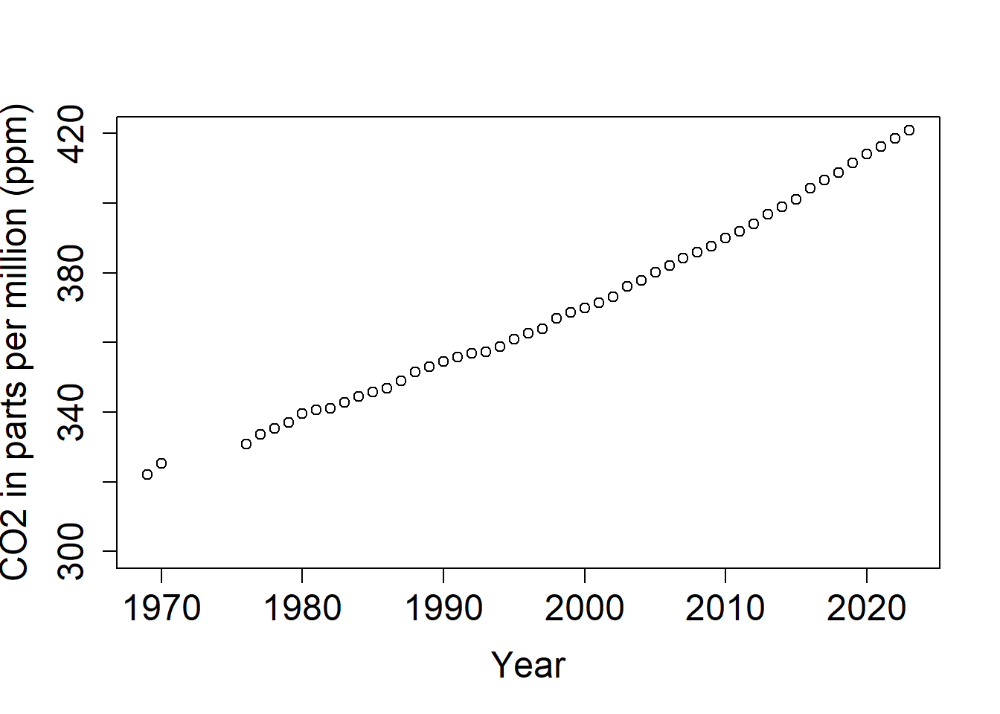

Learning goals:
1. Learn base R syntax for data manipulation
2. Turn messy data into tidy data with tidyr
3. Use efficient tools from the dplyr package to manipulate data
Steps:
1. Subset, extract and modify data with R base operators
2. What is tidy data, and how do we achieve it?
3. Explore the most common and useful functions of dplyr
4. Complete Introduction to R write-up
Due: 9/21/22 at 1:30 PM, Introduction to R write-up (20 pts.). This assignment includes the plot from lab #1, everything asked of you in the blue questions within this document, along with the additional materials and questions at the very end. The write-up should be completed in your favorite word processor and uploaded to the assignment on Canvas.
Data come in all sorts of different shapes and formats, and what is useful or practical for one application is not necessarily so for another. R has specific requirements about the setup and the types of data that can be passed to functions, so one of the best skills in your coding toolbox is being able to play with your data like putty and give it any shape you need!
We will start by showing some ways to manipulate data using base R syntax (without any extra package), because you will often see solutions online using this syntax, and it is good to understand how objects are built (and how to take them apart). After that, we will introduce principles of tidy data to encourage best practice in data collection and organization. We will then start using packages from the Tidyverse, a philosophy of coding that is quickly becoming the norm in R data science, and offers a potentially clearer way of coding than using only base R functions.
Data frames are R objects made of rows and columns containing observations of different variables: you will often be importing your data that way. Sometimes, you might notice some mistakes after importing, need to rename a variable, or keep only a subset of the data that meets some conditions. Let’s dive right in and do that on the Mauna Loa data you worked with last week.
Create a new, blank script, and add in some information at the top, for instance the title of the tutorial, your name, and the date (remember to use hashtags # to comment and annotate your script).
Also, add the code to download the data from the NOAA website (or the appropriate code for however you successfully accessed the data). Don’t forget to name the variables too!
We saw in part 1 that we can access variables in R by using the dollar sign $. This is already one way of subsetting, as it essentially reduces your data frame (2 dimensions) to a vector (1 dimension). You can also access parts of a data frame using square brackets [ , ]. The first number you put will get the row number, and the second the column. Leave one blank to keep all rows or all columns.
# Here's how we get the value in the second row and fourth column
MLO_CO2[2,4]## [1] 321.36Don’t remember what the fourth column is? What function did we use in part one to print information about a data frame? Reproduce that code in your script and run it!
# Here's how we get all the info for row number 6
MLO_CO2[6, ]## Site Year Month CO2
## 6 MLO 1970 1 325.13# And of course you can mix it all together!
MLO_CO2[6, ]$CO2 # returns the value in the column CO2 for the sixth observation## [1] 325.13# (much easier calling columns by their names than figuring out where they are!)Subsetting with brackets using row and column numbers can be quite tedious if you have a large dataset and you don’t know where the observations you’re looking for are situated! And it’s never recommended anyway, because if you hard-code a number in your script and you add some rows later on, you might not be selecting the same observations anymore! That’s why we can use logical operations to access specific parts of the data that match our specification.
# Let's access the values for the Year 1997
MLO_CO2[MLO_CO2$Year == 1997, ]## Site Year Month CO2
## 264 MLO 1997 1 363.21
## 265 MLO 1997 2 364.04
## 266 MLO 1997 3 365.06
## 267 MLO 1997 4 366.71
## 268 MLO 1997 5 366.82
## 269 MLO 1997 6 365.64
## 270 MLO 1997 7 364.24
## 271 MLO 1997 8 362.30
## 272 MLO 1997 9 360.64
## 273 MLO 1997 10 360.86
## 274 MLO 1997 11 362.67
## 275 MLO 1997 12 364.30There’s a lot to unpack here! We’re saying: “Take this dataframe (MLO_CO2), subset it ([ , ]) so as to keep the rows (writing the expression on the left-hand of the comma) for which the value in the column Year is exactly (==) 1997”. Note: The logical expression works here because the Year column contains numeric values: to access data that is of character or factor type, you would use quotation marks: MLO_CO2$Year == “1997”.
Here are some of the most commonly used operators to manipulate data. When you use them to create a subsetting condition, R will evaluate the expression, and return only the observations for which the condition is met.
==: equals exactly
<, <=: is smaller than, is smaller than or equal to
>, >=: is bigger than, is bigger than or equal to
!=: not equal to
%in%: belongs to one of the following (usually followed by a vector of possible values)
&: AND operator, allows you to chain two conditions which must both be met
|: OR operator, to chains two conditions when at least one should be met
!: NOT operator, to specify things that should be omitted
Let’s see them in action!
# Subsetting with one condition
MLO_CO2[MLO_CO2$CO2 < 330, ] # returns only the data for CO2 levels less than 320## Site Year Month CO2
## 1 MLO 1969 8 322.51
## 2 MLO 1969 9 321.36
## 3 MLO 1969 10 320.74
## 4 MLO 1969 11 321.98
## 5 MLO 1969 12 323.78
## 6 MLO 1970 1 325.13
## 7 MLO 1970 2 325.54
## 8 MLO 1970 3 325.67
## 9 MLO 1970 4 326.58
## 10 MLO 1970 5 327.69
## 11 MLO 1970 6 327.30
## 12 MLO 1970 7 326.13
## 13 MLO 1970 8 324.91
## 14 MLO 1970 9 322.99
## 15 MLO 1970 10 322.66
## 16 MLO 1970 11 324.05
## 17 MLO 1970 12 325.55
## 20 MLO 1976 9 329.67
## 21 MLO 1976 10 329.33MLO_CO2[MLO_CO2$CO2 <= 340, ] # returns only the data for CO2 levels less or equal to 340## Site Year Month CO2
## 1 MLO 1969 8 322.51
## 2 MLO 1969 9 321.36
## 3 MLO 1969 10 320.74
## 4 MLO 1969 11 321.98
## 5 MLO 1969 12 323.78
## 6 MLO 1970 1 325.13
## 7 MLO 1970 2 325.54
## 8 MLO 1970 3 325.67
## 9 MLO 1970 4 326.58
## 10 MLO 1970 5 327.69
## 11 MLO 1970 6 327.30
## 12 MLO 1970 7 326.13
## 13 MLO 1970 8 324.91
## 14 MLO 1970 9 322.99
## 15 MLO 1970 10 322.66
## 16 MLO 1970 11 324.05
## 17 MLO 1970 12 325.55
## 18 MLO 1976 7 332.29
## 19 MLO 1976 8 331.04
## 20 MLO 1976 9 329.67
## 21 MLO 1976 10 329.33
## 22 MLO 1976 11 330.47
## 23 MLO 1976 12 331.97
## 24 MLO 1977 1 332.77
## 25 MLO 1977 2 333.10
## 26 MLO 1977 3 334.07
## 27 MLO 1977 4 335.78
## 28 MLO 1977 5 336.49
## 29 MLO 1977 6 335.96
## 30 MLO 1977 7 334.64
## 31 MLO 1977 8 332.31
## 32 MLO 1977 9 330.66
## 33 MLO 1977 10 330.56
## 34 MLO 1977 11 331.73
## 35 MLO 1977 12 333.75
## 36 MLO 1978 1 335.17
## 37 MLO 1978 2 335.78
## 38 MLO 1978 3 336.70
## 39 MLO 1978 4 337.77
## 40 MLO 1978 5 338.02
## 41 MLO 1978 6 337.57
## 42 MLO 1978 7 336.17
## 43 MLO 1978 8 333.89
## 44 MLO 1978 9 332.18
## 45 MLO 1978 10 332.20
## 46 MLO 1978 11 333.24
## 47 MLO 1978 12 334.64
## 48 MLO 1979 1 336.12
## 49 MLO 1979 2 337.21
## 50 MLO 1979 3 338.51
## 51 MLO 1979 4 339.01
## 52 MLO 1979 5 338.93
## 53 MLO 1979 6 338.97
## 54 MLO 1979 7 337.78
## 55 MLO 1979 8 335.57
## 56 MLO 1979 9 333.94
## 57 MLO 1979 10 334.41
## 58 MLO 1979 11 335.66
## 59 MLO 1979 12 336.81
## 60 MLO 1980 1 338.93
## 66 MLO 1980 7 339.16
## 67 MLO 1980 8 337.04
## 68 MLO 1980 9 336.60
## 69 MLO 1980 10 336.60
## 70 MLO 1980 11 337.55
## 71 MLO 1980 12 339.17
## 79 MLO 1981 8 338.80
## 80 MLO 1981 9 337.48
## 81 MLO 1981 10 337.64
## 82 MLO 1981 11 339.00
## 91 MLO 1982 8 339.34
## 92 MLO 1982 9 337.41
## 93 MLO 1982 10 337.73
## 94 MLO 1982 11 339.13
## 104 MLO 1983 9 339.86# This is completely equivalent to the last statement
MLO_CO2[!MLO_CO2$CO2 > 340, ] # the ! means exclude## Site Year Month CO2
## 1 MLO 1969 8 322.51
## 2 MLO 1969 9 321.36
## 3 MLO 1969 10 320.74
## 4 MLO 1969 11 321.98
## 5 MLO 1969 12 323.78
## 6 MLO 1970 1 325.13
## 7 MLO 1970 2 325.54
## 8 MLO 1970 3 325.67
## 9 MLO 1970 4 326.58
## 10 MLO 1970 5 327.69
## 11 MLO 1970 6 327.30
## 12 MLO 1970 7 326.13
## 13 MLO 1970 8 324.91
## 14 MLO 1970 9 322.99
## 15 MLO 1970 10 322.66
## 16 MLO 1970 11 324.05
## 17 MLO 1970 12 325.55
## 18 MLO 1976 7 332.29
## 19 MLO 1976 8 331.04
## 20 MLO 1976 9 329.67
## 21 MLO 1976 10 329.33
## 22 MLO 1976 11 330.47
## 23 MLO 1976 12 331.97
## 24 MLO 1977 1 332.77
## 25 MLO 1977 2 333.10
## 26 MLO 1977 3 334.07
## 27 MLO 1977 4 335.78
## 28 MLO 1977 5 336.49
## 29 MLO 1977 6 335.96
## 30 MLO 1977 7 334.64
## 31 MLO 1977 8 332.31
## 32 MLO 1977 9 330.66
## 33 MLO 1977 10 330.56
## 34 MLO 1977 11 331.73
## 35 MLO 1977 12 333.75
## 36 MLO 1978 1 335.17
## 37 MLO 1978 2 335.78
## 38 MLO 1978 3 336.70
## 39 MLO 1978 4 337.77
## 40 MLO 1978 5 338.02
## 41 MLO 1978 6 337.57
## 42 MLO 1978 7 336.17
## 43 MLO 1978 8 333.89
## 44 MLO 1978 9 332.18
## 45 MLO 1978 10 332.20
## 46 MLO 1978 11 333.24
## 47 MLO 1978 12 334.64
## 48 MLO 1979 1 336.12
## 49 MLO 1979 2 337.21
## 50 MLO 1979 3 338.51
## 51 MLO 1979 4 339.01
## 52 MLO 1979 5 338.93
## 53 MLO 1979 6 338.97
## 54 MLO 1979 7 337.78
## 55 MLO 1979 8 335.57
## 56 MLO 1979 9 333.94
## 57 MLO 1979 10 334.41
## 58 MLO 1979 11 335.66
## 59 MLO 1979 12 336.81
## 60 MLO 1980 1 338.93
## 66 MLO 1980 7 339.16
## 67 MLO 1980 8 337.04
## 68 MLO 1980 9 336.60
## 69 MLO 1980 10 336.60
## 70 MLO 1980 11 337.55
## 71 MLO 1980 12 339.17
## 79 MLO 1981 8 338.80
## 80 MLO 1981 9 337.48
## 81 MLO 1981 10 337.64
## 82 MLO 1981 11 339.00
## 91 MLO 1982 8 339.34
## 92 MLO 1982 9 337.41
## 93 MLO 1982 10 337.73
## 94 MLO 1982 11 339.13
## 104 MLO 1983 9 339.86# Subsetting with two conditions
MLO_CO2[MLO_CO2$Year == 1997 | MLO_CO2$Year == 2010, ] # returns only data for 1997 or 2010## Site Year Month CO2
## 264 MLO 1997 1 363.21
## 265 MLO 1997 2 364.04
## 266 MLO 1997 3 365.06
## 267 MLO 1997 4 366.71
## 268 MLO 1997 5 366.82
## 269 MLO 1997 6 365.64
## 270 MLO 1997 7 364.24
## 271 MLO 1997 8 362.30
## 272 MLO 1997 9 360.64
## 273 MLO 1997 10 360.86
## 274 MLO 1997 11 362.67
## 275 MLO 1997 12 364.30
## 420 MLO 2010 1 388.79
## 421 MLO 2010 2 389.91
## 422 MLO 2010 3 391.27
## 423 MLO 2010 4 392.79
## 424 MLO 2010 5 393.56
## 425 MLO 2010 6 392.45
## 426 MLO 2010 7 390.27
## 427 MLO 2010 8 388.17
## 428 MLO 2010 9 386.74
## 429 MLO 2010 10 387.39
## 430 MLO 2010 11 388.74
## 431 MLO 2010 12 390.23MLO_CO2[MLO_CO2$Year == 1997 & MLO_CO2$Month %in% c(1:3), ] # returns data for the first through third month of 1997## Site Year Month CO2
## 264 MLO 1997 1 363.21
## 265 MLO 1997 2 364.04
## 266 MLO 1997 3 365.06As you can see, the more demanding you are with your conditions, the more cluttered the code becomes. We will soon learn some functions that perform these actions in a more minimalist way, but sometimes you won’t be able to escape using base R (especially when dealing with non-data-frame objects), so it’s good to understand these notations.
Did you notice that last bit of code: c(1:3)? We saw in Part 1 that we can use c() to concatenate elements in a vector. Using a colon between the two numbers means counting up from 1 to 3.
Other useful vector sequence builders are:
seq() to create a sequence, incrementing by any specified amount. E.g. try seq(2, 12, 2)
rep() to create repetitions of elements. E.g. rep(c(1,2), 3) will give 1 2 1 2 1 2.
You can mix and match! What would rep(seq(0, 30, 10), 4) give?
And finally, let’s say you need to modify some values or factor levels, or want to create a new column? Now that you know how to access parts of a data frame, you can do all of that. You only need an extra tool: the assign arrow <- to overwrite data.
Remember how we’ve been using the arrow <- to create new objects? This is a special convention in R that allows you to pick whichever name you want and assign it to an object (vector, list, data frame…).
Something to keep in mind is that if you use a name again in the same session, it will overwrite the former object. With experience, you can start making changes to an object and overwrite as you go, to “update” the object rather than creating many intermediaries (“object1”, “object2”, …). However, when you’re starting out, it’s a good idea to create these intermediary objects, or at least to create a “working copy” that you can reassign to the main data object once you’re satisfied with the changes.
As you will now see, we can also make use of the arrow <- to overwrite specific values or range of values we need to change.
## CHANGING VARIABLE NAMES AND VALUES IN A DATA FRAME
# Let's create a working copy of our object so we can practice making changes to our dataset without actually changing it
MLO_CO2b <- MLO_CO2
# Now suppose you want to change the name of a column: you can use the names() function
# Used on its own, it returns a vector of the names of the columns. Used on the left side of the assign arrow, it overwrites all or some of the names to value(s) of your choice.
names(MLO_CO2b) # returns the names of the columns## [1] "Site" "Year" "Month" "CO2"names(MLO_CO2b)[1] <- "site" # Changing Site to site: we call the 1st element of the names vector using brackets, and assign it a new value
names(MLO_CO2b)[2] <- "Y" # Changing Year to Y: we call the 2nd element and assign it the desired value
# Now suppose there's a mistake in the data, and the CO2 value 385.8 for March in 2008 should really be 386.8
## - option 1: you can use row and column number
MLO_CO2b[398,4] <- 386.8
## - option 2: you can use logical conditions for more control
MLO_CO2b[MLO_CO2b$Y == 2008 & MLO_CO2b$Month == 3, ]$CO2 <- 386.8 # completely equivalent to option 1Can you spot pros and cons of options 1 and 2 above?
Option 1 is compact, but requires you to know exactly where the value to be corrected is. If you re-import your dataset at a later time with new values, it may not be in the same place.
Option 2 is longer and more difficult to read (it uses brackets to extracts the row corresponding to individual #373, and then the dollar sign to access just the column called X2008), but provides fine control, and the code will run even if the observation moves in your dataset.
1. Now it’s your turn to practice. Write and run the code to change the CO2 value for May 2018 from 411.71 to 412 in the ML_CO2b dataset. Include the code in your write-up.
Using the same techniques, you can specify variable classes, which will be highly useful when we get to designing statistical models and need grouping variables like factors.
## CREATING A FACTOR
# Let's check the classes
str(MLO_CO2b)## 'data.frame': 563 obs. of 4 variables:
## $ site : chr "MLO" "MLO" "MLO" "MLO" ...
## $ Y : int 1969 1969 1969 1969 1969 1970 1970 1970 1970 1970 ...
## $ Month: int 8 9 10 11 12 1 2 3 4 5 ...
## $ CO2 : num 323 321 321 322 324 ...# The site column shows as character data, but it's really a grouping factor (the site could have been called A, B, C, etc.) Let's turn it into a factor:
MLO_CO2b$site <- as.factor(MLO_CO2b$site) # converting and overwriting original class
str(MLO_CO2b) # now site is a factor with 1 level## 'data.frame': 563 obs. of 4 variables:
## $ site : Factor w/ 1 level "MLO": 1 1 1 1 1 1 1 1 1 1 ...
## $ Y : int 1969 1969 1969 1969 1969 1970 1970 1970 1970 1970 ...
## $ Month: int 8 9 10 11 12 1 2 3 4 5 ...
## $ CO2 : num 323 321 321 322 324 ...And what if you’re not happy with the factor levels? You can see the names of the factors with the levels() function… and yes, overwrite them, too.
That was a lot, but now you’ll be able to adapt these little chunks of code to manipulate your own data. The next sections will hopefully make things even easier, as they’ll teach you more intuitive functions to accomplish the same things.
The way you record information in the field or in the lab is probably very different from the way you want your data entered into R. In the field, you want tables that you can ideally draw up ahead of time and fill in as you go, and you will be adding notes and all sorts of information in addition to the data you want to analyze. This usually results in data organized with many observations per row. On the contrary, tidy datasets are arranged so that each row represents an observation and each column represents a variable. This is how our data is currently organized.
This makes a much longer dataframe row-wise, which is why this form is often called long format. Now if you wanted to compare between groups, treatments, etc., R would be able to split the dataframe correctly, as each grouping factor has its own column.
The spread() function from the tidyr package will let us convert long-format data (tidy dataframe) to wide-format. The gather() function will let us convert a wide-format table to a tidy dataframe.
install.packages("tidyr") # install the packagelibrary(tidyr) # load the package
# Spread() allows you to go from long to wide format
MLO_CO2_wide <- spread(MLO_CO2, Year, CO2) # in this order: data frame, key, value
# the key variable (Year) dictates the new columns (one for each year) and the value variable (CO2) indicates that CO2 concentrations are given within each Year column
#CO2 values are spread by year
# Let's reverse! gather() is the inverse function, allowing you to go from wide to long format
MLO_CO2_long <- gather(MLO_CO2_wide,Year, CO2, # in this order: data frame, key, value
c(3:50)) # we gather CO2 values by year (the first two of the 50 columns in MLO_CO2_wide are not CO2 values)Since our original data was in long, tidy form, the new data frame MLO_CO2_long should be very similar to the original dataset. However it is slightly different. It added a few extra rows for the missing months of CO2 concentration in 1969 and 1976.
However, these functions have limitations and will not work on every data structure. To quote Hadley Wickham, “every messy dataset is messy in its own way”. This is why giving a bit of thought to your dataset structure before doing your digital entry can spare you a lot of frustration later!
The package dplyr is a fantastic bundle of intuitive functions for data manipulation, named after the action they perform. A big advantage of these functions is that they take your data frame as a first argument, so that you can refer to columns without explicitly having to refer to the full object (so you can drop those $ signs!). This is also easing us into the idea of piping, which is another aspect of the tidyverse that makes code readable for newer coders. Let’s meet the most common and useful functions. Install and load the package if you haven’t done so already.
install.packages("dplyr") # install the packagelibrary(dplyr) # load the packageThis lets you change the name(s) of a column or columns. The first argument is the data frame, the second (and third, etc.) takes the form New name = Old name.
MLO_CO2_long <- rename(MLO_CO2_long, S = Site, M = Month, Y = Year, CO2 = CO2) # changes the names of the columns and overwriting our data frame
# As we saw earlier, the base R equivalent would have been
names(MLO_CO2_long) <- c("S", "M", "Y", "CO2")These are some of the most routine functions that let you reduce your data frame to just the rows and columns you need. The filter() function works great for subsetting rows with logical operations. The select() function lets you specify which columns to keep. Note: the select() function often clashes with functions of the same name in other packages, and for that reason it is recommended to always use the notation dplyr::select() when calling it.
# FILTER OBSERVATIONS
# Let's keep observations from month 2 and 3 only, and from years 2009 to 2011
MLO_CO2_subset <- filter(MLO_CO2, Month %in% c(2, 3), Year %in% c(2009:2011)) # you can use multiple different conditions separated by commas
# For comparison, the base R equivalent would be (not assigned to an object here):
MLO_CO2[MLO_CO2$Month %in% c(2,3) & MLO_CO2$Year %in% c(2009:2011), ]## Site Year Month CO2
## 409 MLO 2009 2 387.94
## 410 MLO 2009 3 388.63
## 421 MLO 2010 2 389.91
## 422 MLO 2010 3 391.27
## 433 MLO 2011 2 392.32
## 434 MLO 2011 3 392.82Note that here, we use %in% as a logical operator because we are looking to match a list of exact values. If you want to keep observations within a range of numeric values, you either need two logical statements in your filter() function, e.g. Month > 4 & Month <= 6 or you can use the convenient between() function, e.g. between(Month, 4, 6).
2. Write and run the code to create a new subset using the filter function that keeps values from months 8 through 12 in the years 1994 and 1995. Include the code in your write-up.
See how dplyr is already starting to shine by avoiding repetition and calling directly the column names without needing to call the object every time?
To quote or not to quote?
You may have noticed how we sometimes call values in quotes ““, and sometimes not. This depends on:
- Whether the value you are calling is a character or numeric value: above, Month is of class integer (a number), so we don’t need quotes around the values it takes.
-Whether you are calling an existing object or referring to a value that R does not yet know about. Compare:
The first creates a duplicate of our object, because R recognizes the name as an object in our environment. In the second case, you’re creating an object consisting of one character value.
It takes time and practice to get used to these conventions, but just keep an eye out for error messages and you’ll get there.
Now that we know how to subset rows, let’s do the same with columns!
# SELECT COLUMNS
# Let's ditch the S column just as an example
MLO_CO2_no.S <- dplyr::select(MLO_CO2, Month, Year, CO2) # or alternatively
MLO_CO2_no.S <- dplyr::select(MLO_CO2, -Site) # the minus sign removes the column
# For comparison, the base R equivalent would be (not assigned to an object here):
head(MLO_CO2[ , -1]) # removes first column## Year Month CO2
## 1 1969 8 322.51
## 2 1969 9 321.36
## 3 1969 10 320.74
## 4 1969 11 321.98
## 5 1969 12 323.78
## 6 1970 1 325.13The group_by() function doesn’t cause visible change to your data frame. It creates an internal grouping structure. It’s very useful when you want to compute summary statistics using the summarize() function.
The summarize() function will always aggregate your original data frame, i.e. the output data frame will be shorter than the input. Here, let’s calculate the mean CO2 concentration (summarize) by year (group_by).
# NEW OBJECT THAT SUMMARIZES OUR DATA USING THE GROUP_BY AND SUMMARIZE FUNCTIONS
MLO_CO2_y <- MLO_CO2 %>% # specify data frame
group_by(Year) %>% # group by year
summarize(CO2 = mean(CO2, na.rm=TRUE)) # calculate mean CO2 values (by year), na.rm=TRUE removes NA valuesThis is our first true example of the piping method of coding, which is more intuitive and readable than the base R functionality.
The %>% operator, called pipe, chains functions together. So, the code above instructs R to use the MLO_CO2 data frame, group the data by Year, and calculate mean CO2 concentrations. In other words, it is calculating mean CO2 values for ALL of the years in the dataset.
This is some really powerful code! Remember how much coding you did last week just to plot the mean CO2 concentration for only 5 years.
Check out the structure of the new dataset and make a scatterplot of the CO2 concentrations by year.
str(MLO_CO2_y)## tibble [48 × 2] (S3: tbl_df/tbl/data.frame)
## $ Year: int [1:48] 1969 1970 1976 1977 1978 1979 1980 1981 1982 1983 ...
## $ CO2 : num [1:48] 322 325 331 333 335 ...plot(CO2 ~ Year, data = MLO_CO2_y,
ylab = "CO2 in parts per million (ppm)", xlab = "Year", ylim=c(300,420),
cex.axis=1.5, cex.lab=1.5)
This plot should look familiar. It is VERY similar to the Keeling curve we examined in class!
If you do not remember what some of these graphing parameters do, use help(“par”) to review them.
3. Use what you have just learned to create a data frame of mean CO2 concentrations by month (ignore year), and then plot them. Play around with adjusting the graphing parameters to improve the plot aesthetics. Include both plots of C02 by year and CO2 by month in your write-up along with the code used to make the plots.
Your Introduction to R write-up should be completed in your favorite word processor, uploaded to the assignment on Canvas, and include: